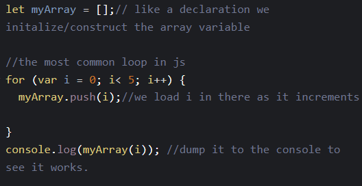

Today’s JavaScript Tip
Loops
When you have a repetitive task, it might better to use a loop. Programming loops are all to do with doing the same thing over and over again, which is termed iteration in programming speak.
A loop usually has one or more of the following features:
- A counter
- This will generally increments the counter by one. It is initialized with a certain value — this is the starting point of the loop .
- A condition
- A condition which is a true/false test to determine whether the loop continues to run, or stops — usually when the counter reaches a certain value.
- An Iterator
- An Iterator will generally increments the counter by a small amount on each successive loop until the condition is no longer true.